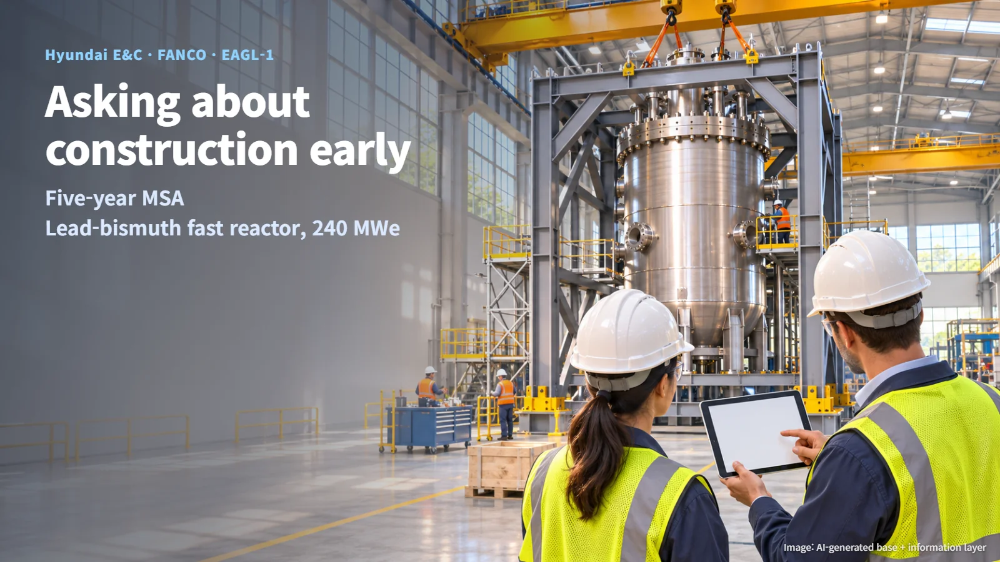
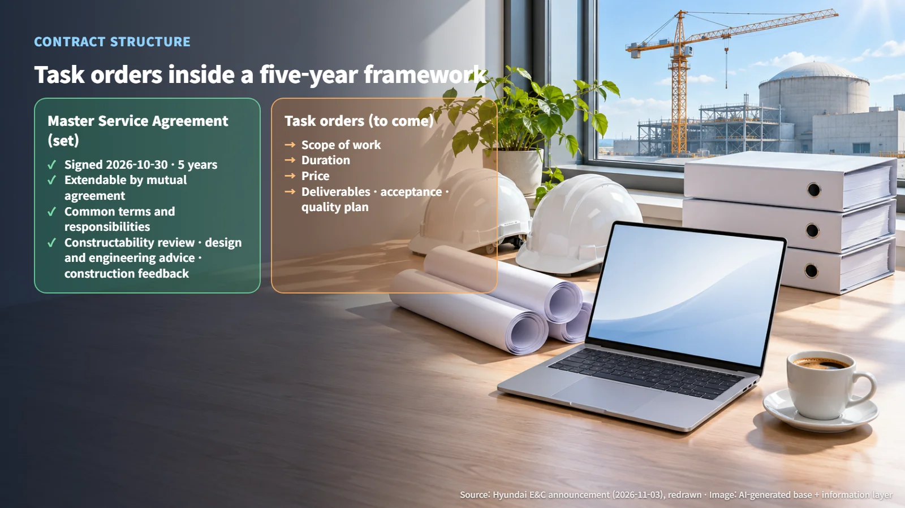
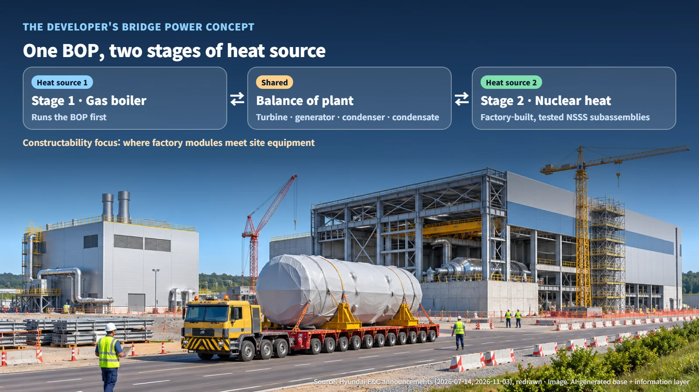
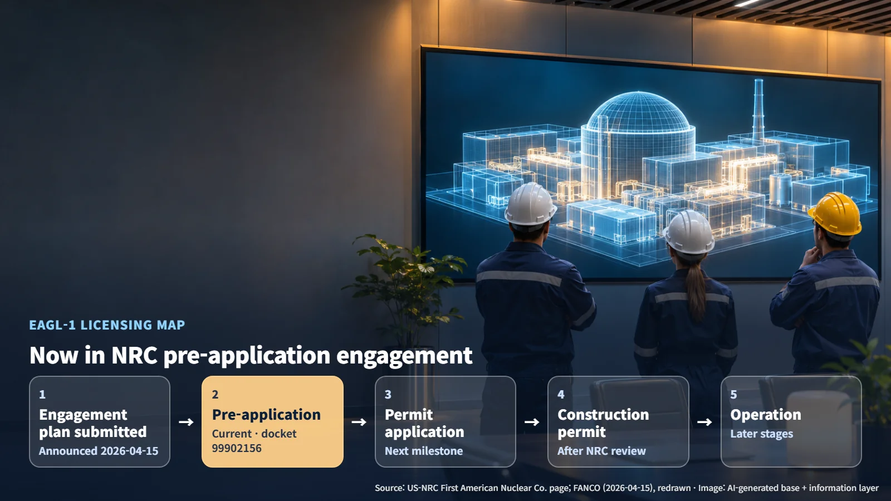

United States · Korea · Advanced Reactors
Asking About Construction at the Design Stage: Inside the Hyundai E&C and FANCO Master Service Agreement for EAGL-1
A five-year Master Service Agreement gives Hyundai E&C a framework to advise on EAGL-1 constructability, with scope and price set later through individual task orders.
When a construction company signs a contract for a reactor that has yet to apply for a license, a fair question is what exactly the two sides have agreed to. On October 30, 2026, South Korea's Hyundai Engineering & Construction (Hyundai E&C) and US-based First American Nuclear Co. (FANCO) signed a five-year Master Service Agreement for the EAGL-1 project at Hyundai E&C's headquarters in Gye-dong, Seoul. Hyundai E&C announced the agreement in English on November 3. This article walks through what the agreement settles today and what will be settled next.

A Five-Year Framework, With Individual Work Ordered Separately
A Master Service Agreement (MSA) is a framework. It sets out, in advance, the common contract terms and responsibilities that apply whenever the two companies work together. When a specific piece of work comes up, the parties issue a separate task order, and that task order fixes the scope, duration and price. The arrangement resembles a standing supply agreement with a regular vendor: the general terms are signed once, and actual purchases are placed through individual orders as the need arises.

The announcement settles two things. The first is the term: five years, extendable by mutual agreement. The second is the field of work, which covers three areas:
- Constructability review
- Design and engineering technical advisory services
- Technical feedback on construction
What comes next is the content of each task order: its scope, duration and price, along with deliverables, acceptance authority and quality plans. These details have not been disclosed.
The MSA builds on a basic agreement the two companies reached in July 2026, moving that cooperation to a contract stage designed for ongoing work. What changes with this step is practical: a ready procedure now exists to order work as soon as it is needed. The actual size of the work will become visible through the task orders that follow.
EAGL-1: A Lead-Bismuth Fast Reactor Built Around Factory Modules
The developer describes EAGL-1 as a lead-bismuth-cooled fast reactor with a design electrical output of 240 MWe. A liquid metal made of lead and bismuth carries heat away from the core, and fission is sustained by fast neutrons, with no moderator to slow them down. FANCO calls the design a fast-spectrum small modular reactor (SMR).
The design concept divides the plant into two parts with distinct roles. The nuclear steam supply system (NSSS), which groups the reactor with its steam-generating equipment, is planned to be manufactured, assembled and tested in a factory, then shipped to the site as tested subassemblies. The balance of plant (BOP), which turns steam into electricity, includes the turbine, generator, condenser and condensate systems.
FANCO adds a business concept called Bridge Power. It is a two-stage plan: the BOP first runs on steam from a gas boiler, and the heat source later switches to nuclear. In effect, the same turbine and generator would first take steam from a gas boiler and later take heat from the reactor.

Seen this way, it becomes clear where constructability review concentrates: the boundary where factory-built modules meet site-built equipment, meaning the module boundaries and site interfaces. The cooperation Hyundai E&C announced in July 2026 covered BOP design, phased power supply support, constructability review and modularization strategy, which fits this structure closely. Module boundaries and site interface conditions will be defined in later design work.
Constructability Review Follows Each Version of the Design
A constructability review (an assessment of whether a design can actually be built, and whether it could be built more easily, drawing on construction experience) asks concrete questions. Can a crane lift this weight? Can this component travel by road at this size? Is there enough room on site to connect the piping? The two companies plan to carry out their cooperation by feeding this kind of construction experience into the early design.
Review results are tied to a particular design version. Which version was reviewed, and under what conditions, defines how far the results apply. When a module's mass, dimensions or interfaces change, the transportation and installation reviews are updated as well. Early in design, the room for change is greatest, so constructability advice works best as repeated work that tracks each design revision, rather than a single report delivered once. That is why a contract structure that issues task orders one at a time within a five-year framework suits this kind of work well: each round of design changes can be matched with its own scope of review.
NRC Pre-Application Engagement Now, a Construction Permit Application Next
The US Nuclear Regulatory Commission (NRC) project page states that the agency is conducting pre-application engagement with FANCO for a future construction permit application. Pre-application engagement is the stage before a formal filing, when a developer and the regulator align early on technical issues and submission plans. The page lists docket number 99902156 and regulatory engagement plan reference ML26048A512. In the public table, the status of the regulatory engagement plan is shown as "No review requested."
Laid out as a map, the stages look like this:
1. Announcement of the regulatory engagement plan submission (April 15, 2026) 2. Pre-application engagement (current stage) 3. Construction permit application 4. Construction permit 5. Later operating stages
EAGL-1 sits at stage 2, and the next milestone is the construction permit application. Signing a design advisory agreement at this point means that a construction perspective joins the process of refining the design that will go into that application.

Design, licensing and construction interlock over many years before a reactor comes into being. This agreement is an example of linking design and construction early in that sequence. The next points to watch are the scope of the individual task orders as they are issued, and the timing of the move from NRC pre-application engagement to a construction permit application.